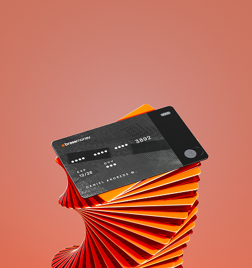
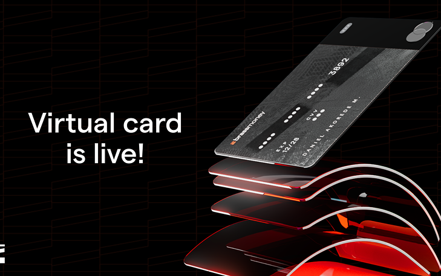

I directed the 3D product animation for Brassmoney's virtual card — part of Brass's business banking platform, letting Nigerian businesses issue unlimited virtual and physical cards, set spend limits per card, and track exactly how every card holder spends.
A virtual card only exists on screen, so my job was giving it the same tactile, premium presence as its physical counterpart — trustworthy and real despite never touching a hand. Clean render, confident material, and light that makes the whole thing feel solid instead of abstract.

